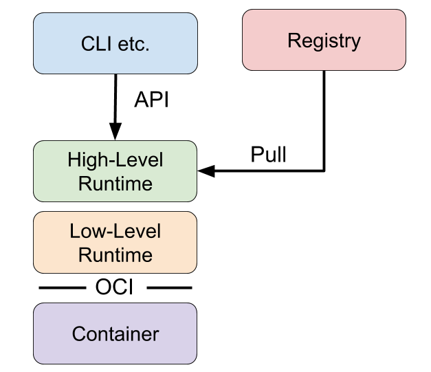
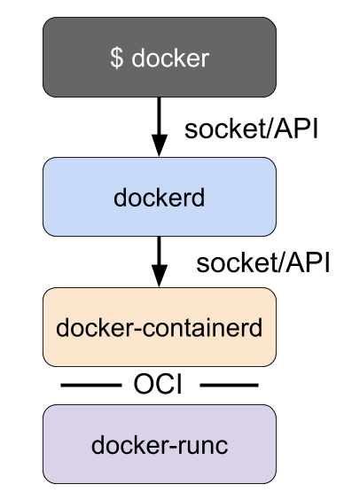

Container Runtimes Part 3: High-Level Runtimes
containers container-runtime-series
This is the third part in a four-part series on container runtimes. It's been a while since part 1, but in that post I gave an overview of container runtimes and discussed the differences between low-level and high-level runtimes. In part 2 I went into detail on low-level container runtimes and built a simple low-level runtime.
High-level runtimes are higher up the stack than low-level runtimes. While low-level runtimes are responsible for the mechanics of actually running a container, high-level runtimes are responsible for transport and management of container images, unpacking the image, and passing off to the low-level runtime to run the container. Typically, high-level runtimes provide a daemon application and an API that remote applications can use to logically run containers and monitor them but they sit on top of and delegate to low-level runtimes or other high-level runtimes for the actual work.
High-level runtimes can also provide features that sound low-level, but are used across individual containers on a machine. For example, one feature might be the management of network namespaces, and allowing containers to join another container's network namespace.
Here's a conceptual diagram to understand how the components fit together:

Examples of High-Level Runtimes
To better understand high-level runtimes, it’s helpful to look at a few examples. Like low-level runtimes, each runtime implements different features.
Docker
Docker is one of the first open source container runtimes. It was developed by the platform-as-a-service company dotCloud, and was used to run their users' web applications in containers.
Docker is a container runtime that incorporates building, packaging,
sharing, and running containers. Docker has a client/server architecture
and was originally built as a monolithic daemon, dockerd, and the docker
client application. The daemon provided most of the logic of building
containers, managing the images, and running containers, along with an
API. The command line client could be run to send commands and to get
information from the daemon.
It was the first popular runtime to incorporate all of the features needed during the lifecycle of building and running containers.
Docker originally implemented both high-level and low-level runtime
features, but those pieces have since been broken out into separate
projects as runc and containerd. Docker now consists of the dockerd daemon, and the docker-containerd daemon along with docker-runc. docker-containerd and docker-runc are just Docker packaged versions of vanilla containerd and runc.

dockerd provides features such as building images, and dockerd uses docker-containerd
to provide features such as image management and running containers.
For instance, Docker's build step is actually just some logic that
interprets a Dockerfile, runs the necessary commands in a container
using containerd, and saves the resulting container file system as an image.
containerd
containerd is a high-level
runtime that was split off from Docker. Like runc, which was broken off
as the low-level runtime piece, containerd was broken off as the
high-level runtime piece of Docker. containerd implements
downloading images, managing them, and running containers from images.
When it needs to run a container it unpacks the image into an OCI
runtime bundle and shells out to runc to run it.
Containerd also provides an API and client application that can be
used to interact with it. The containerd command line client is ctr.
ctr can be used to tell containerd to pull a container image:
$ sudo ctr images pull docker.io/library/redis:latest
List the images you have:
$ sudo ctr images list
Run a container based on an image:
$ sudo ctr container create docker.io/library/redis:latest redis
List the running containers:
$ sudo ctr container list
Stop the container:
$ sudo ctr container delete redis
These commands are similar to how a user interacts with Docker. However, in contrast with Docker, containerd is focused solely on running containers, so it does not provide a mechanism for building containers. Docker was focused on end-user and developer use cases, whereas containerd is focused on operational use cases, such as running containers on servers. Tasks such as building container images are left to other tools.
rkt
In the previous post, I mentioned that rkt is a runtime
that has both low-level and high-level features. For instance, much like
Docker, rkt allows you to build container images, fetch and manage
container images in a local repository, and run them all from a single
command. rkt stops short of Docker's functionality, however, in that it doesn't provide a long-running daemon and remote API.
You can fetch remote images:
$ sudo rkt fetch coreos.com/etcd:v3.3.10
You can then list the images installed locally:
$ sudo rkt image list
ID NAME SIZE IMPORT TIME LAST USED
sha512-07738c36c639 coreos.com/rkt/stage1-fly:1.30.0 44MiB 2 minutes ago 2 minutes ago
sha512-51ea8f513d06 coreos.com/oem-gce:1855.5.0 591MiB 2 minutes ago 2 minutes ago
sha512-2ba519594e47 coreos.com/etcd:v3.3.10 69MiB 25 seconds ago 24 seconds ago
And delete images:
sudo rkt image rm coreos.com/etcd:v3.3.10
successfully removed aci for image: "sha512-2ba519594e4783330ae14e7691caabfb839b5f57c0384310a7ad5fa2966d85e3"
rm: 1 image(s) successfully removed
Though rkt doesn't seem to be actively developed very much anymore it is an interesting tool and an important part of the history of container technology.
Onward, Upward
In the next post I'll move up the stack and talk about runtimes from the perspective of Kubernetes and how they work. Be sure to add my RSS feed or follow me on Twitter to get notified when the next blog post comes out.
Update: Please continue on and check out Container Runtimes Part 4: Kubernetes Container Runtimes & CRI
Until then, you can get more involved with the Kubernetes community via these channels:
- Post and answer questions on Stack Overflow
- Follow @Kubernetesio on Twitter
- Join the Kubernetes Slack and chat with us. (I'm ianlewis so say Hi!)
- Contribute to the Kubernetes project on GitHub
If you have any suggestions or ideas for blog posts, send them to me on Twitter at @IanMLewis via either a reply or DM. Thanks!
> Thanks to Craig Box, Marcus Johansson, Steve Perry, and Nicolas Lacasse for reviewing drafts of this post.